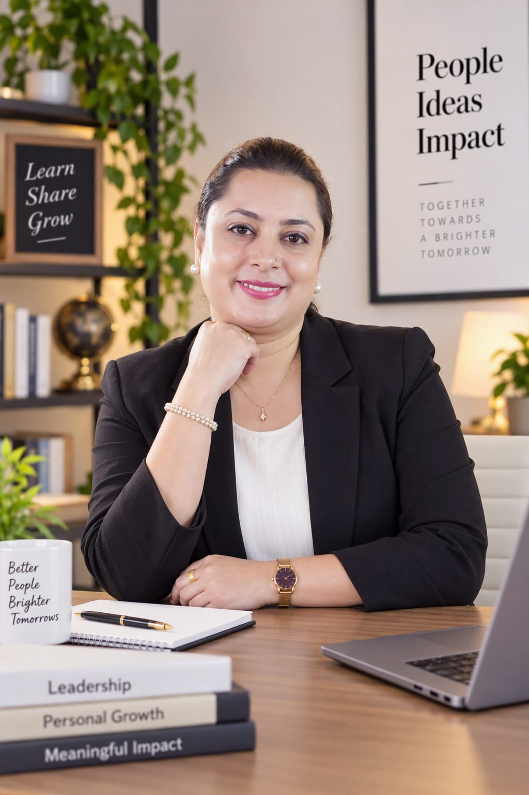

Our story
At the heart of Innerello is a simple belief: knowledge is one of the few gifts that stays with a person for life. That belief guides our work as we help people build confidence, capability, and opportunities for a better future.
Over the years, we recognized a gap between learning and real-world success. Students need more than qualifications, and organizations need more than skilled employees. Lasting success comes from the ability to communicate, lead, influence, adapt, and perform with confidence.
Innerello was created to bridge that gap through learning, leadership development, coaching, and consulting solutions that empower individuals, strengthen organizations, and create meaningful, lasting impact.

Vision
To create a lasting impact on professionals by offering holistic solutions that enhance personal and professional well-being.
Mission
To offer innovative, holistic career well-being solutions that bring about meaningful personal and professional change, driving clarity, growth and lasting success.
Our values: R.I.C.H.
True success is built on Redefining growth through Integrity, Compassion, and a Holistic Approach.
Redefining Growth
We measure growth by lasting capability and confidence, not by certificates alone.
Integrity
We act with honesty and keep our commitments to every learner, client and partner.
Compassion
We listen first and design every program around where each person starts.
Holistic Approach
We develop the whole person: skills, mindset, behaviour and well-being.

Meet the founder
Dr. Urmi Roychoudhury, Founder & Managing Director
Dr. Urmi Roychoudhury is a leadership consultant, executive coach, and Founder of Innerello. With over 20 years of experience across corporate, learning, and coaching environments, she partners with organizations and institutions to develop leaders, strengthen capabilities, and create meaningful, lasting impact. Her work is driven by a simple belief: growth becomes transformational when learning translates into action.
Connect on LinkedIn
Recognition
Women in Leadership Award
Recognizing excellence in leadership and the ability to create meaningful impact through learning and development.
Inspiring Women Award
For work in education, coaching, and leadership development that creates lasting change.
Param Shree Award
Presented by the SevaPrith Foundation for contribution to education, professional development and societal impact.
Why Innerello
- Practitioner-led, with real corporate and leadership experience
- Customized to your goals, never off the shelf
- Focused on lasting behaviour change
- Experience across 12+ industries and the education sector